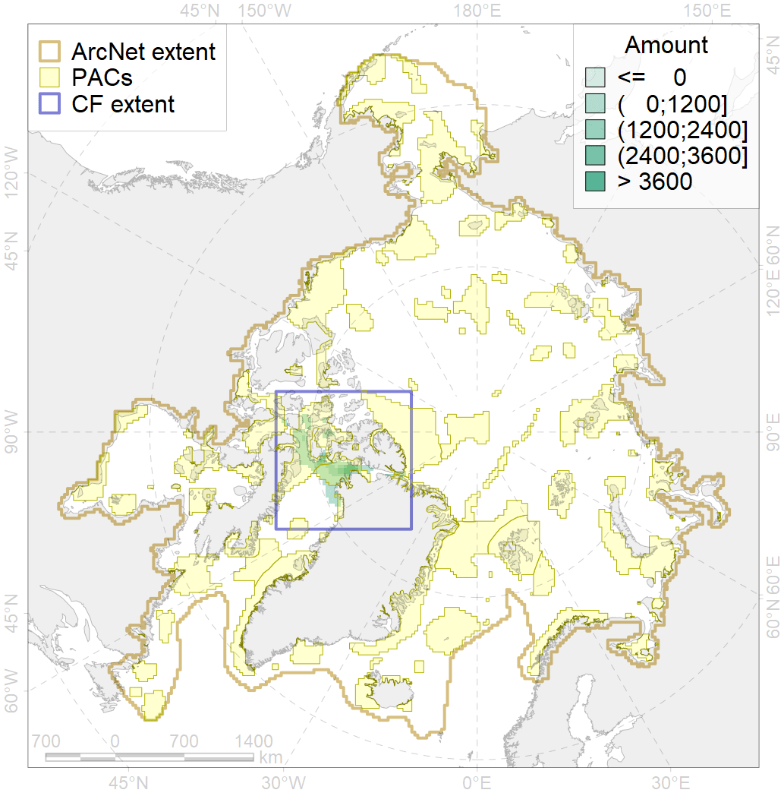
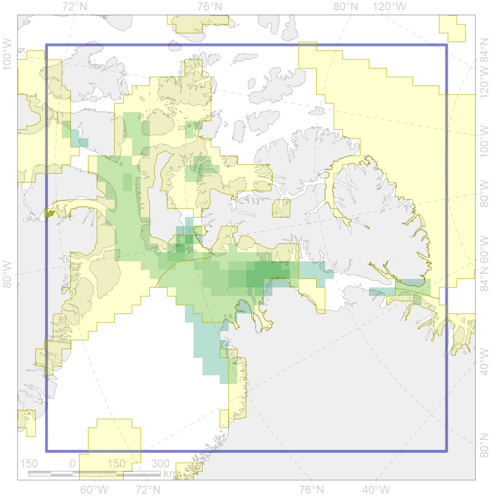

3126

| CF code | 3126 |
| CF name | Polynyas distribution in the Baffin Bay region |
| Time Period | 1998 – 2018, adopted for recent changes |
| Source(s) | AARI ice charts, CIS ice charts |
| Seasonality | Spring |
| Depth Horizon | Sea level (0m) |
| Methodology | Timeseries analysis for spatial locals |
| Use Restrictions | Joined terms of data licenses, copyrights, restrictions, terms of use, disclaimers, etc. No additional terms from data contributor. |
| Author Name | Nikita Platonov |
| Notes | |
| Scenario’s Target | 0.2 |
| Target Achievement | 0.948 (Scenario: 474.2%) |
| PAC | Share of the Total Amount within the PAC | Share of the Target Achievement for the ArcNet | PAC’s Contribution to the Target Achievement |
|---|---|---|---|
| 33 | 0.0%0.0% | 0.1%0.2% | 0.0%0.0% |
| 49 | 0.1%0.1% | 0.2%0.2% | 0.0%0.0% |
| 51 | 66.2%74.1% | 327.0%366.5% | 69.0%77.3% |
| 52 | 27.4%29.5% | 136.7%146.9% | 28.8%31.0% |
| 54 | 0.0%0.0% | 0.1%0.2% | 0.0%0.1% |
| 65 | 0.0%0.0% | 0.1% | 0.0% |
| inner | 93.7%103.7% | 464.2%514.1% | 97.9%108.4% |
| outer | 6.3%15.8% | 9.9%55.1% | 2.1%11.6% |
| † supplement values are for area consistence whereas principal values are for Accenter compatible gridded stats |